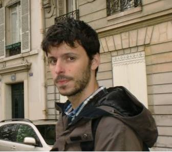

Home
|  | Contact information: francisco.gdiogo at gmail.com LIP Laboratório de Instrumentação e Física Experimental de Partículas 1649-003 Lisboa - Portugal |
I am a Post-Doc Researcher at LIP in Lisbon, Portugal as a member of the Pierre Auger collaboration. I work on high-energy particle astrophysics, in particular trying to understand the composition of the most energetic particles in the universe measured at the Pierre Auger Observatory.